Every successful breeding decision starts with understanding the cow's reproductive cycle. The estrous cycle is a repeating pattern of about 21 days, controlled by hormones from the brain, the ovary and the uterus. When a farmer understands this cycle — when heat appears, when ovulation happens, and which hormone does what — heat detection improves, insemination timing improves, and conception rates rise.
This guide explains the estrous cycle and ovulation in simple terms, introduces the key reproductive hormones, and shows how estrus synchronization and Fixed-Time Artificial Insemination (FTAI) help farmers breed groups of cows on planned days.
The Estrous Cycle — About 21 Days
A healthy, non-pregnant cow comes into heat every 18 to 24 days, most commonly every 21 days. The cycle has four stages. Only during estrus (heat) will the cow accept mating or insemination.
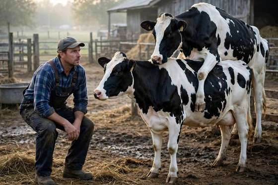
Standing heat — the cow stands still when mounted
1
Proestrus — 2 to 3 days(A follicle grows on the ovary and estrogen rises; the cow becomes restless, the vulva swells, and clear mucus may appear)
2
Estrus (heat) — 12 to 18 hours(The cow stands to be mounted, mounts other cows, bellows and eats less; this is the only time for mating or AI)
3
Metestrus — 3 to 4 days(Ovulation has occurred and the corpus luteum forms on the ovary; a small bloody discharge is sometimes seen and is normal)
4
Diestrus — 12 to 14 days(The corpus luteum produces progesterone; if the cow is not pregnant, prostaglandin from the uterus ends this stage and a new cycle begins)
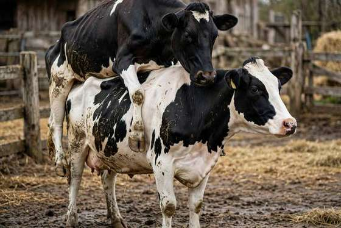
Standing heat — the cow stands still when mounted
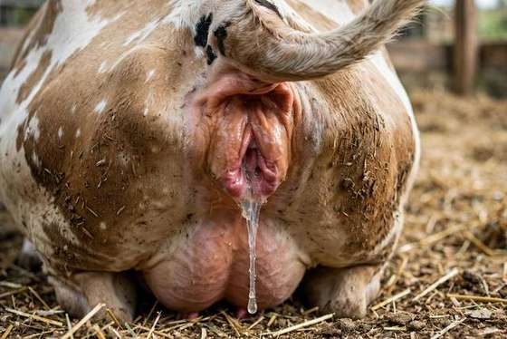
Swollen vulva with clear mucus — a visible sign of heat
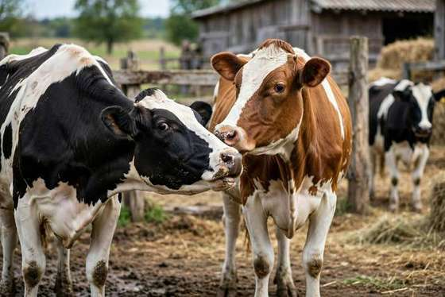
Proestrus — restless, sniffing other cows, early heat signs
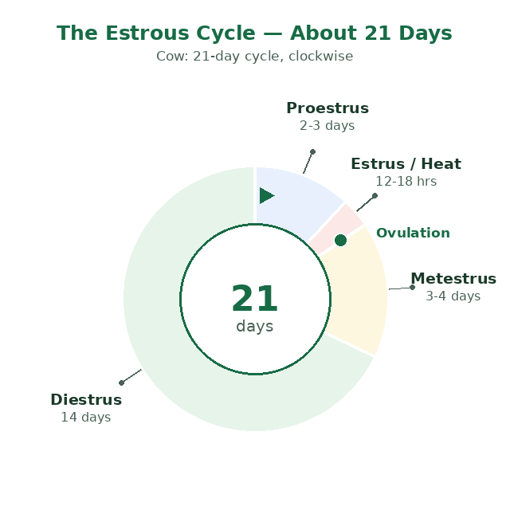
The 21-day estrous cycle — ovulation follows standing heat
Ovulation — When the Egg Is Released
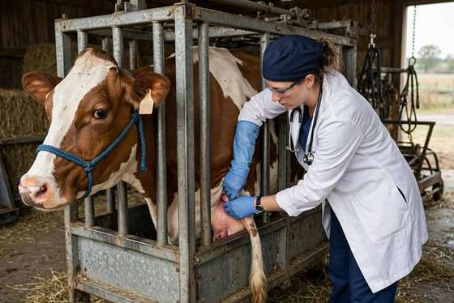
Ovarian examination — the veterinarian feels the follicle before ovulation
Ovulation — the release of the egg from the follicle — happens about 12 hours after the end of standing heat. The egg survives only 6 to 12 hours, while semen survives about 24 to 30 hours inside the cow. That is why timing matters so much: semen must already be waiting when the egg arrives. This is the scientific basis of the AM-PM rule — a cow first seen in heat in the morning is inseminated the same evening, and a cow first seen in heat in the evening is inseminated the next morning.
Key Reproductive Hormones — What Each One Does
Six hormones control the whole cycle. Think of them as messages passed between the brain, the ovary and the uterus.
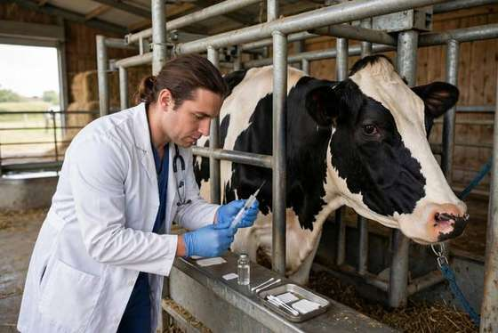
Hormone treatments must be given by, or under the guidance of, a veterinarian
1
GnRH — gonadotropin-releasing hormone(Released from the brain; the master switch that triggers FSH and LH release from the pituitary gland)
2
FSH — follicle-stimulating hormone(Grows the follicles on the ovary; each follicle holds one egg)
3
LH — luteinizing hormone(A sudden surge of LH causes ovulation and then forms the corpus luteum)
4
Estrogen(Produced by the growing follicle; causes heat behaviour and triggers the LH surge)
5
Progesterone(Produced by the corpus luteum; maintains pregnancy and suppresses heat; high during diestrus and pregnancy)
6
Prostaglandin F2α (PGF2α)(Produced by the uterus; destroys the corpus luteum so a new cycle can start — the basis of most synchronization programmes)
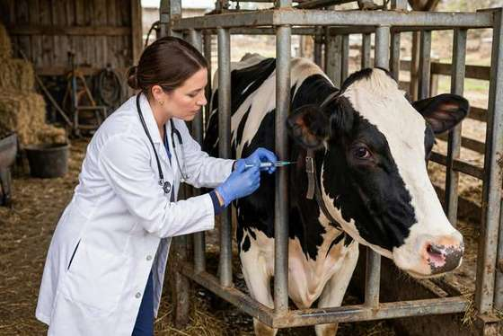
Hormone injection given by the veterinarian in the crush
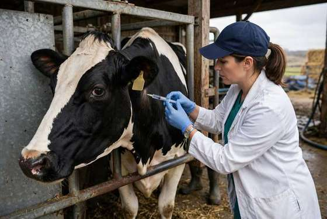
GnRH injection — the master switch that triggers ovulation
Estrus Synchronization Protocols — The Principles
Estrus synchronization uses these hormones to bring a group of cows into heat at the same time, so the whole group can be inseminated on planned days. The veterinarian chooses the programme after examining the cows. Three common approaches are:
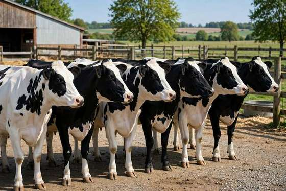
Synchronized cows come into heat together — breeding can be planned
1
Prostaglandin-based programmes(One or two prostaglandin injections, about 11 to 14 days apart, destroy the corpus luteum and bring cows into heat within a few days; they work only on cows that already have a functional corpus luteum)
2
GnRH-based programmes (Ovsynch)(A GnRH injection, then prostaglandin about 7 days later, then a second GnRH injection — this sequence controls follicle growth and ovulation timing, and is usually combined with fixed-time AI)
3
Progesterone-based programmes (CIDR)(A progesterone-releasing device is placed in the vagina for about 7 days, with prostaglandin given at removal; useful for cows that are not cycling, because progesterone prevents early heat and then its withdrawal triggers heat together)
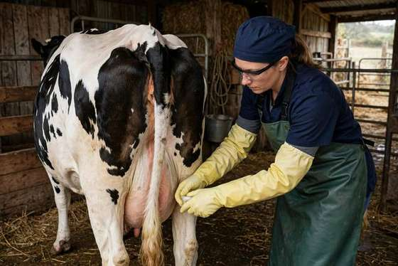
A progesterone device (CIDR) being placed by the veterinarian
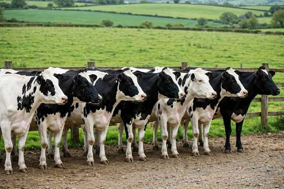
A synchronized herd — all cows ready for breeding together
Important: Hormone doses and exact day-by-day schedules must be prescribed by a veterinarian for the specific herd. Never copy a protocol from another farm — the wrong hormone at the wrong stage of the cycle fails or harms fertility.
Fixed-Time Artificial Insemination (FTAI) — What It Is and Why It Helps
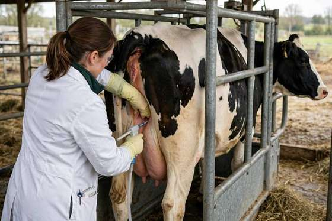
FTAI — insemination at a fixed time, without waiting to see heat
FTAI means inseminating cows at a fixed time after a hormone programme, without detecting heat at all. The hormones control when ovulation happens, so the inseminator knows the right hour in advance.
No heat detection needed — the biggest labour saving, especially on large farms or where cows are grazed.
Whole groups bred on one day — calving is grouped, which simplifies feeding, housing and calf care.
Cows that never show clear heat can still be bred — including many postpartum cows.
Breeding and calving can be planned around feed availability, milk demand and the season.
Conception rates with FTAI are generally close to those of heat-based AI in well-managed herds, but they fall sharply if cows are thin, underfed or unhealthy. Good nutrition and body condition before the programme are essential.
When Synchronization Helps — and When It Does Not
Synchronization is a management tool, not a cure for infertility. It works best when the herd is healthy and well fed.
⚠ Good candidates for synchronization:
Healthy cows in good body condition, at least 40 to 60 days after calving.
Large herds where daily heat detection is difficult.
Farms that want grouped calving or seasonal breeding.
Heifers that are well grown and cycling normally.
⚠ Do NOT synchronize these animals:
Thin, underfed or sick cows — fix feeding and health first.
Cows with uterine infection, retained placenta or abnormal discharge.
Cows very soon after calving, before the uterus has recovered.
Cows whose pregnancy status is unknown — always confirm a cow is not pregnant first.
Frequently Asked Questions
What are the four stages of the estrous cycle in cattle?
Proestrus (2–3 days): the follicle grows and estrogen rises. Estrus or heat (12–18 hours of standing heat): the cow accepts mounting and ovulation follows about 12 hours after heat ends. Metestrus (3–4 days): the corpus luteum forms. Diestrus (12–14 days): the corpus luteum produces progesterone until prostaglandin ends the cycle if the cow is not pregnant.
What do reproductive hormones do in cows?
GnRH from the brain triggers FSH and LH release. FSH grows the ovarian follicle. The LH surge causes ovulation. Estrogen from the follicle causes heat behaviour. Progesterone from the corpus luteum maintains pregnancy and suppresses heat. Prostaglandin F2α from the uterus destroys the corpus luteum so a new cycle can begin.
What is estrus synchronization in cattle?
Estrus synchronization uses hormones to make a group of cows come into heat at the same time, so they can be inseminated together on planned days. Common approaches are prostaglandin-based, GnRH-based and progesterone-device-based programmes, always designed and supervised by a veterinarian.
What is Fixed-Time Artificial Insemination (FTAI)?
FTAI means inseminating cows at a fixed time after a hormone programme, without waiting to see heat. The hormones control ovulation timing, so the whole group is inseminated on one day. It removes the need for heat detection and allows planned breeding and calving.
When should a cow be inseminated after heat?
Follow the AM-PM rule: a cow first seen in heat in the morning should be inseminated the same evening, and a cow first seen in heat in the evening should be inseminated the next morning. Ovulation occurs about 12 hours after the end of standing heat, so correct timing is the main factor in conception.
Why is my cow not showing heat?
The most common reasons are poor feeding and low body condition, heavy suckling by the calf, recent calving, hot weather and silent heat that the farmer misses. A veterinarian can examine the cow, check the ovaries and advise on feeding, weaning and treatment.
Can hormones make all my cows come into heat together?
Yes — that is estrus synchronization. A veterinarian designs a hormone programme for the group, and the cows are inseminated together on planned days. It works best on healthy, well-fed cows with good body condition; thin or sick cows respond poorly.
گائے کے ہیٹ سائیکل اور ہارمونز کے بارے میں بتائیں؟
گائے کا ہیٹ سائیکل تقریباً 21 دن کا ہوتا ہے جس میں چار مرحلے ہوتے ہیں: پرو ایسٹرس، ایسٹرس (ہیٹ)، میٹ ایسٹرس اور ڈائی ایسٹرس۔ ہارمونز جیسے GnRH، FSH، LH، ایسٹروجن، پروجیسٹرون اور پروسٹا گلینڈن اس سائیکل کو کنٹرول کرتے ہیں۔ ہارمونز کی مدد سے کئی گائیوں کو ایک ساتھ ہیٹ میں لایا جا سکتا ہے جسے ایسٹرس سنکرونائزیشن کہتے ہیں۔
Key Takeaway
The estrous cycle is a 21-day rhythm driven by six hormones. A farmer who understands heat, ovulation and timing will detect heat better, inseminate at the right hour and get more cows pregnant. Synchronization and FTAI turn that knowledge into planned, group breeding — but only on healthy, well-fed cows under veterinary guidance. Follow current local veterinary authority guidance for all hormone programmes.